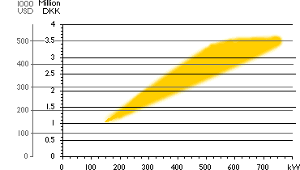

|
What
does a Wind Turbine Cost?
The
Price Banana

The graph above gives an impression of the price range of
modern, Danish grid connected wind turbines as of February 1998.
As you can see prices vary for each generator size. The reasons
are e.g. different tower heights, and different rotor diameters.
One extra metre of tower will cost you roughly 1 500 USD.
A special low wind machine with a relatively large rotor diameter
will be more expensive than a high wind machine with a small
rotor diameter.
Economies
of Scale
As you move from a 150 kW machine to a 600 kW machine, prices
will roughly triple, rather than quadruple. The reason is, that
there are economies of scale up to a certain point, e.g. the
amount of manpower involved in building a 150 kW machine is not
very different from what is required to build a 600 kW machine.
E.g. the safety features, and the amount of electronics required
to run a small or a large machine is roughly the same. There
may also be (some) economies of scale in operating
wind parks rater than individual turbines, although such economies
tend to be rather limited.
Price
Competition and Product Range
Price competition is currently particularly tough, and the product
range particularly large around 500 - 750 kW. This is where you
are likely to find a machine which is optimised for any particular
wind climate.
Typical
600 kW Machines on the Market Today
Even if prices are very similar in the range from 500 to 750
kW, you would not necessarily want to pick a machine with as
large a generator as possible. A machine with a large 750 kW
generator (and a relatively small rotor diameter) may generate
less electricity than, say a 450 kW machine, if it is located
in a low wind area. The working horse today is typically a 600
kilowatt machine with a tower height of some 40 to 50 metres
and a rotor diameter of around 43 metres.
We use a typical Danish 600 kW turbine as
an example below (approximate amounts in US dollars, prices vary
with tower heights, rotor diameter, and local specifications):
1
000 Dollars per Kilowatt Average
The average price for large, modern wind farms is around 1 000
USD per kilowatt electrical power installed. (Note, that
we are not talking about annual energy production, yet.
We'll return to that in a couple of pages. Energy production
is measured in kilowatt hours. If this sounds confusing, take
a look at the Reference
Manual of this web site).
For single turbines or small clusters of
turbines the costs will usually be somewhat higher. On the next
page we will discuss installation costs further.
|